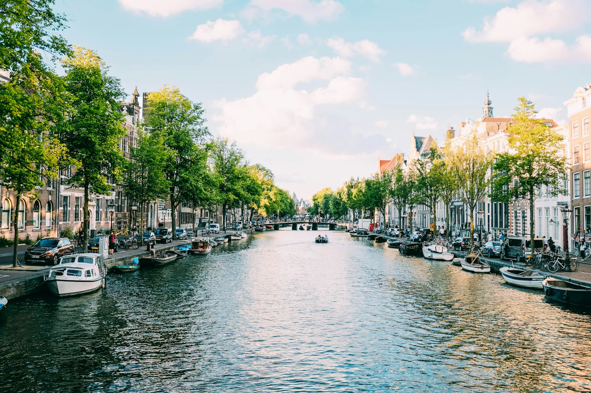
Netherlands
Amsterdam
City of late years and last nights. Canals, hotels, the end of the map.
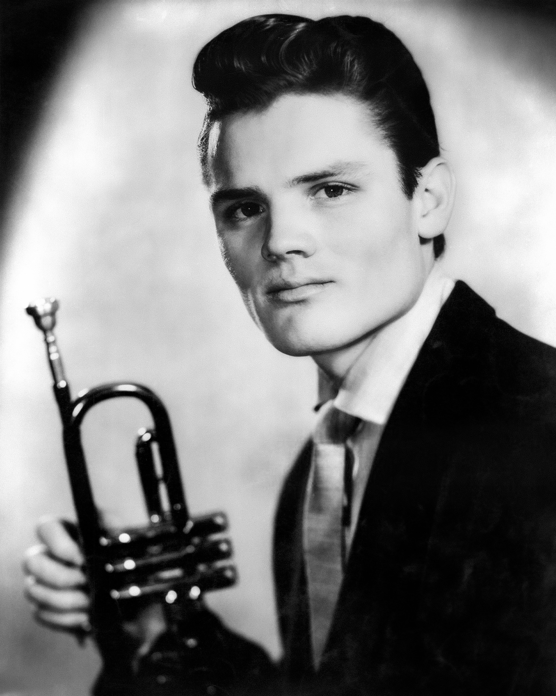
A documentary in production · 2026
Were Chet Baker’s European years a waste, or the real body of the work?
Photograph: Chet Baker, 1955. Public domain. Wikimedia Commons.
The film
Chasing Chet follows Chet Baker’s European years: Amsterdam, Paris, Milan, Rome, Brussels, Liège. Rooms that still remember him. Musicians still alive who sat beside him on bandstands and in studios when the American press had already written the ending.
This film asks a plain question. Was that stretch of his life only addiction and exile, or did he make lasting music there? We travel the route with a small crew, a trumpet, and the people who can still answer from first hand.
The access will not last. Many of the interviewees are in their eighties and nineties. The film is being made now for that reason alone.
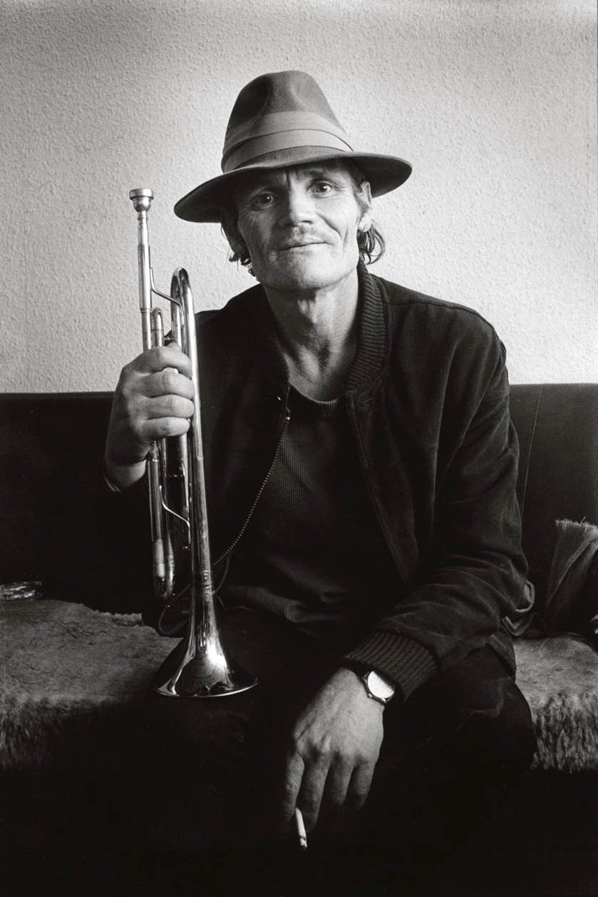
The counterpart
Bruce Weber’s Let’s Get Lost fixed Chet Baker in American myth: the beautiful West Coast cool, then the long fall. It remains the film most people mean when they say “the Chet Baker documentary.”
Chasing Chet is not a remake and not a correction of that film. It is the other half of the map: Europe, the collaborators still here, and the albums that argue those years were not empty.
Reference only. Not affiliated with Little Bear Films or the rights holders of Let’s Get Lost.
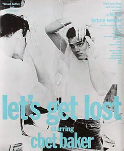
Europe
Amsterdam, Paris, Milan, Lucca, Florence, Rome, Brussels, Bilzen, Liège. The cities Baker kept returning to when America had already decided his story.
Hotels with his name in the lore. Studios where the tape still meant something. A house in Liège that remembers the nights. The route is the argument of the film in physical form.

City of late years and last nights. Canals, hotels, the end of the map.

Kirk Lightsey. A city Baker returned to when work and friendship still held.
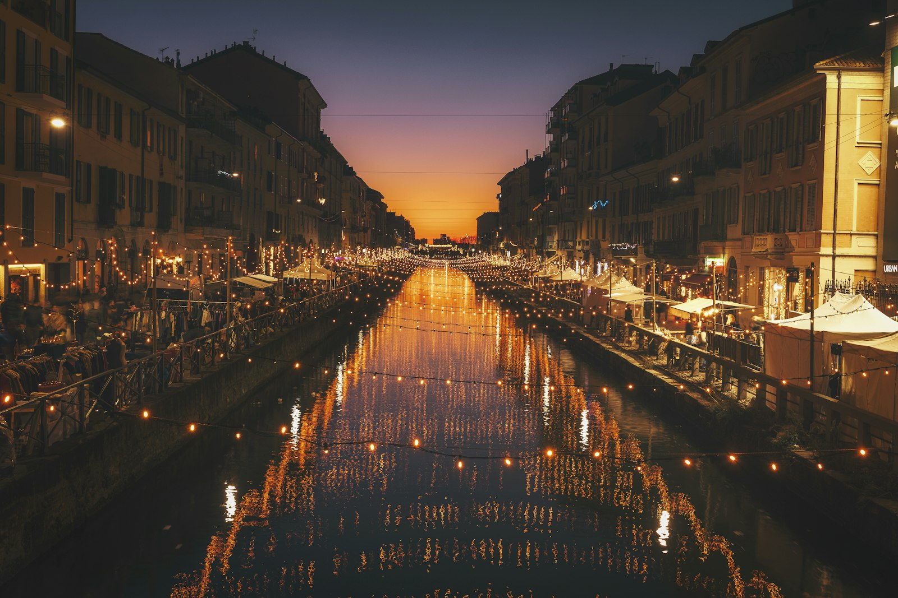
Train into Italy, then the road south through the country that kept hiring him.
Nicola Stilo and Giovanni Tommaso. The Italian years spoken from the stand.
Philip Catherine, Wim Wigt, Max Bolleman. Where so many late records were made real.
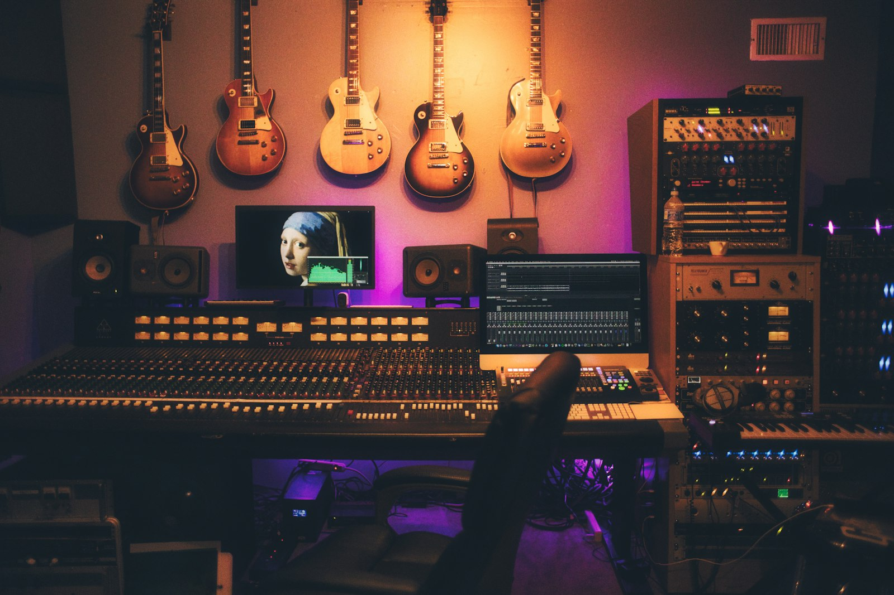
Jacques Pelzer’s place. A house that still belongs to the European jazz story.
On camera
Friends, sidemen, producers, and a biographer. People who sat in the rooms when Baker still worked, and people who have spent years trying to understand what those rooms meant.
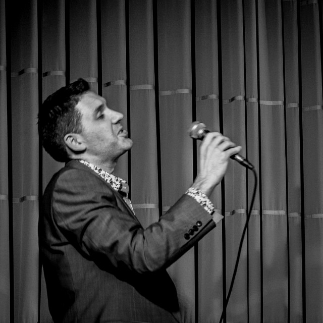
Director · pianist · singer
A musician who has lived inside Baker’s songbook for years, and now turns the camera toward the Europe that held him.
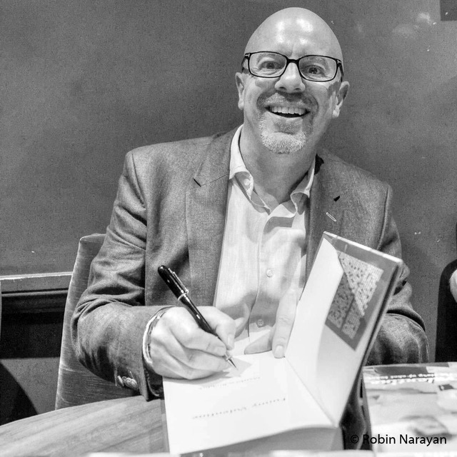
Biographer
Author of Funny Valentine. The life, the catalogue, the long European chapters.
Addiction expert
On the drug years without turning the music into a diagnosis.
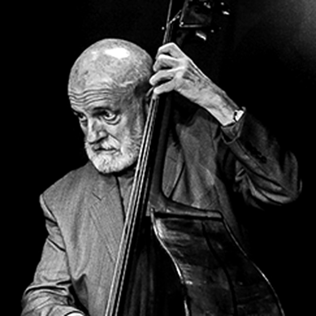
Bass
Baker’s language as working players hear it: on the stand, between the changes.
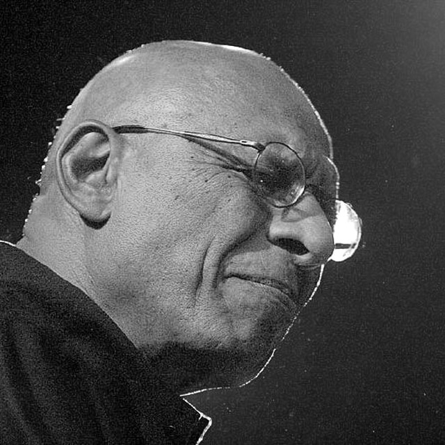
Piano
A major collaborator from the later years. Paris still holds the sound of that partnership.
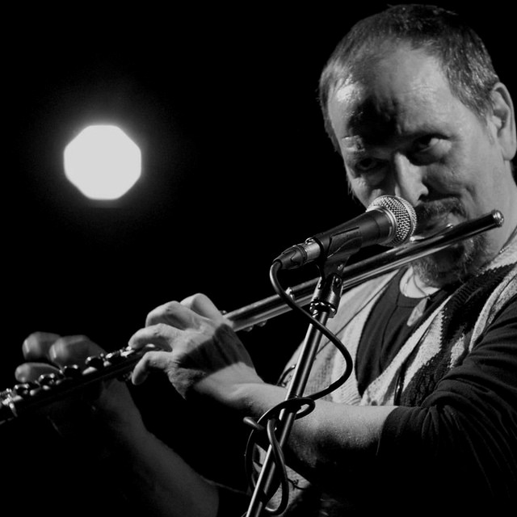
Flute & guitar
Played with Baker in Italy. One of the late-period voices still able to speak from the stand.
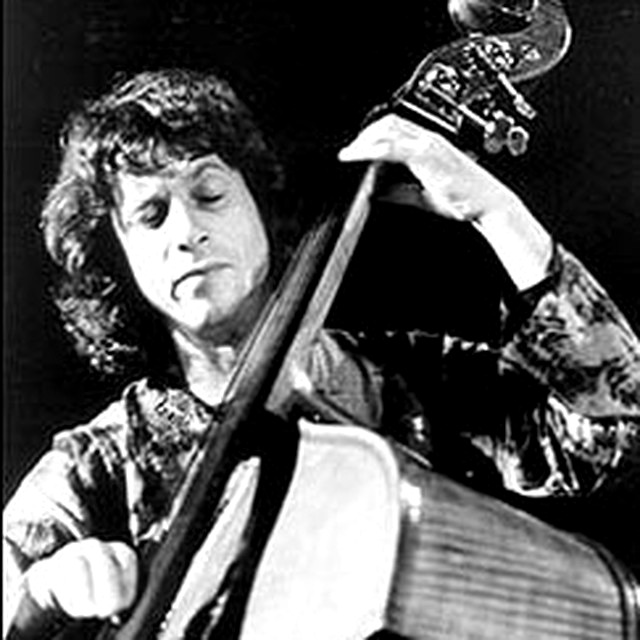
Bass
Italian sessions, the rhythm section, the daily work of keeping Baker honest.
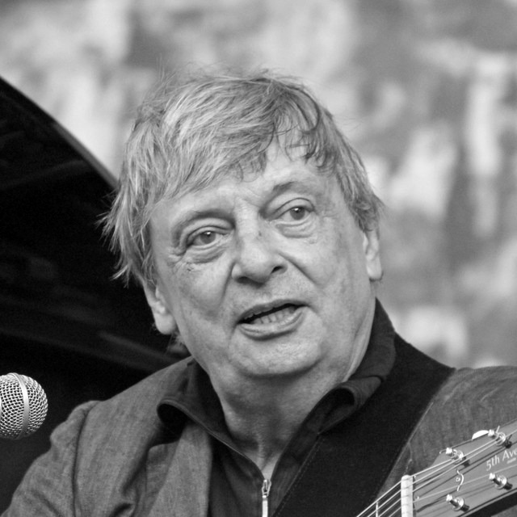
Guitar
One of Europe’s essential guitar voices, with direct history beside Baker.
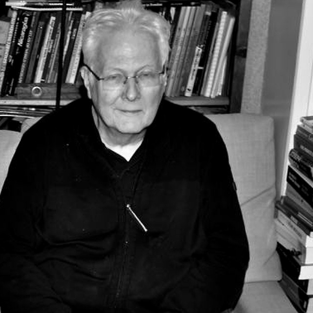
Promoter & producer
Timeless Records and the late European infrastructure that kept Baker working.
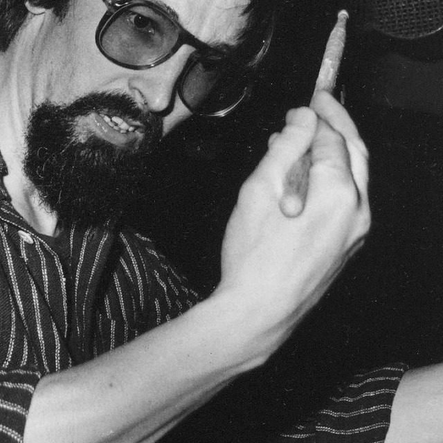
Recording engineer
The man who put so many of the European masters on tape.
Music & performance
For years Robin Phillips has sung and played Baker’s songs with trumpeter James Brady. The film comes out of that work.
Brady comes on the road. They play the music in the places Baker played it. When a master recording cannot be used, the trumpet still can.
There is also a Top 30 albums series: the same question, one record at a time.
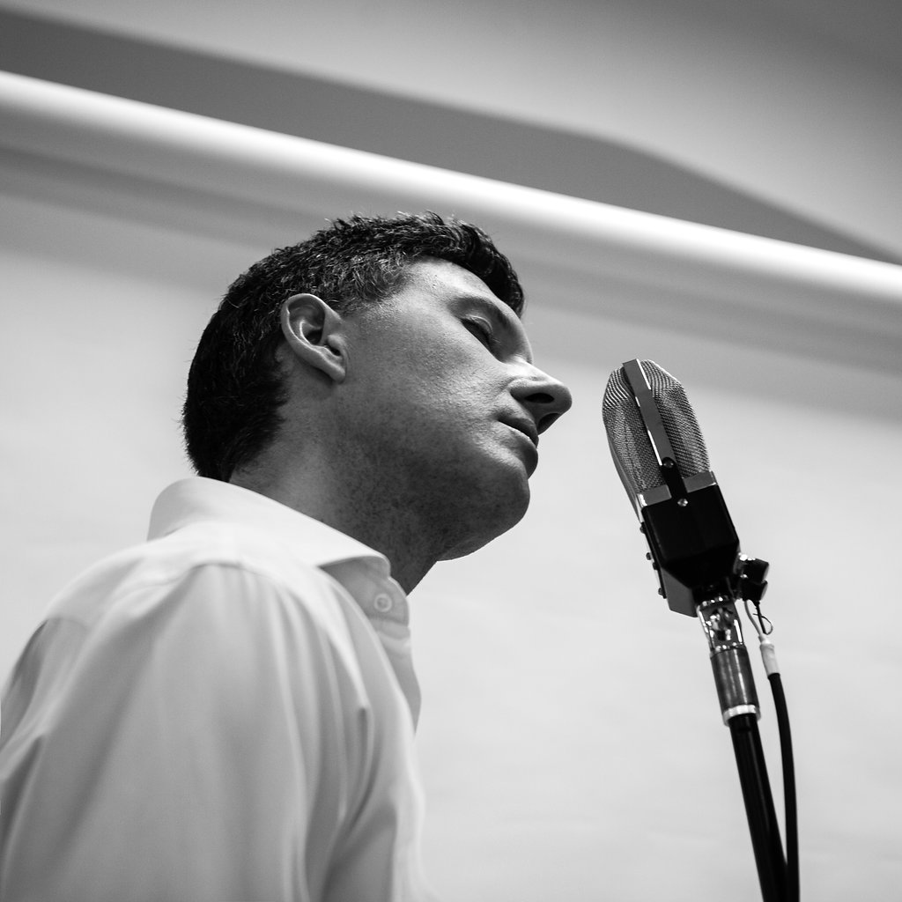
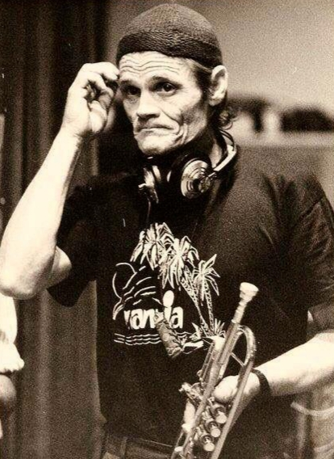
Robin Phillips Sings & Plays: Chet Baker, featuring James Brady · repmusic
Credits
Chasing Chet. Directed by Robin Phillips. In production, 2026.
The film
When there is a trailer, a screening, or a finished cut to share, it will live here. Until then, write to Robin.
Email the production